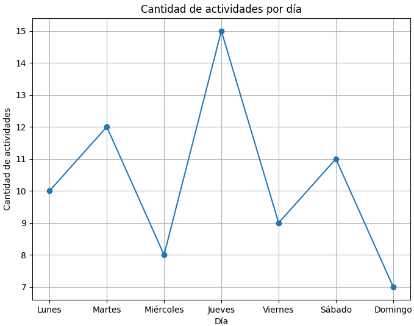
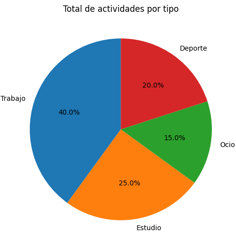
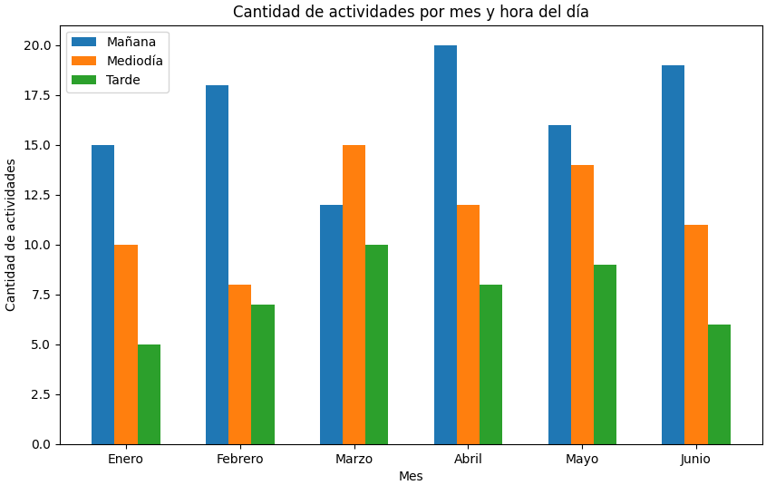

Cantidad de actividades por día

Este gráfico muestra la cantidad de actividades registradas por día durante el último mes.
Distribución de actividades por tipo

Este gráfico muestra la distribución del total de actividades según el tipo o tema.
Actividades por momento del día y mes

Este gráfico muestra la cantidad de actividades que inician en la mañana, mediodía y tarde para cada mes del año.